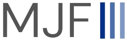
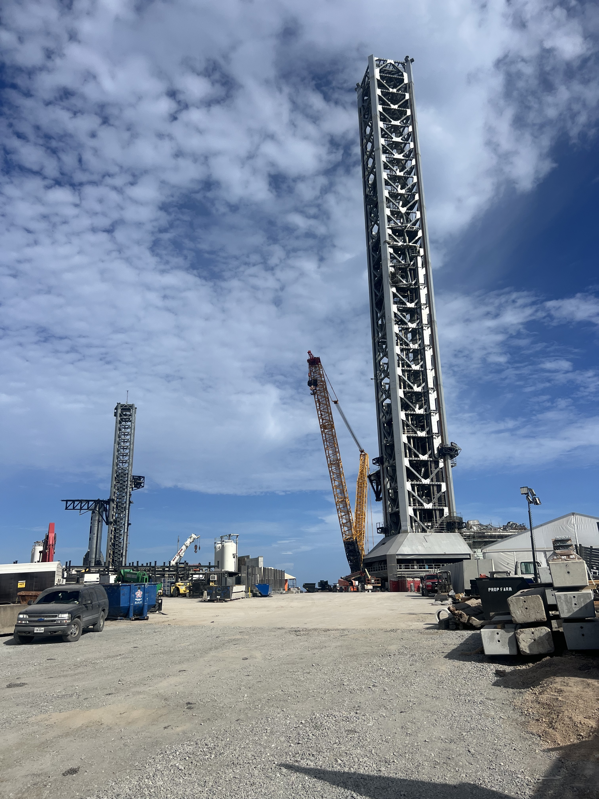
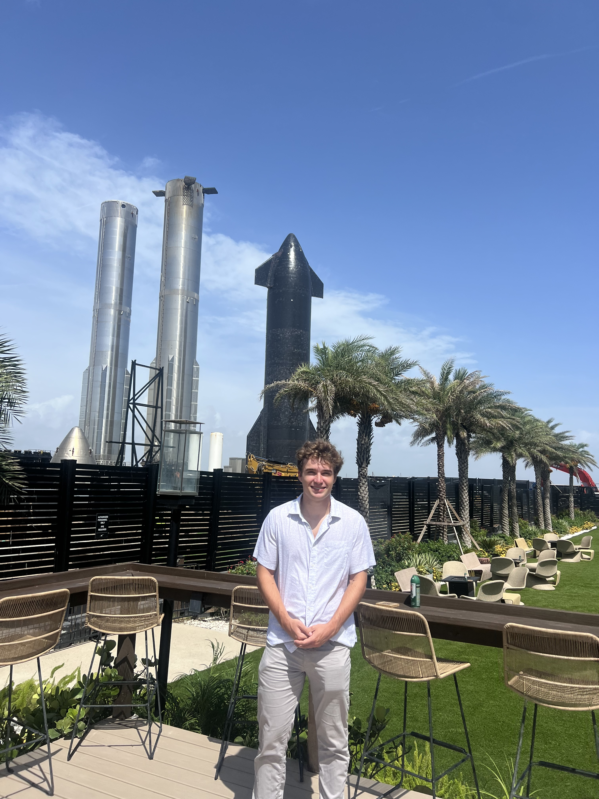

I spent Summer 2025 at Starbase, as far south as you can go in the state of Texas. It was an incredible opportunity with incredible work, and I was even so lucky as to see Starship Flight 9 my second week.
I was part of the Tower Mechanical team, where I worked on structural and fluid systems around the tower. I owned a post-flight component failure investigation and designed/executed tensile and flow testing to replicate the failure mode. I was the responsible engineer for a new hydraulic system installation and its hardware, managing conflicting timelines between the mechanical, electrical, and civil teams. I also designed, built, and maintained a pneumatic system to support hydraulic operations around the tower. A partiucular pride point was learning how to analyze fluid networks to design for CdA and compressible mass flow requirements, and then delivering systems that met design standards while minimizing material cost.
On my team I had the responsibilty to design and build components, which led to not only great mentorship from the other engineers on my team when it comes to design, but also immense learning in what it takes to actualize design and work with skilled technicians. While I did spend much time in NX at the desk, I also spent a fairly significant amount of time at the tower, whether that was making sure my designs were accounting for real-world build or making sure the technicians had the parts they needed to succeed.
My summer at SpaceX was a summer filled with learning, hard work, and success. I strongly believe I provided real value to the mission, and know the skills I honed will remain with me entire professional career.